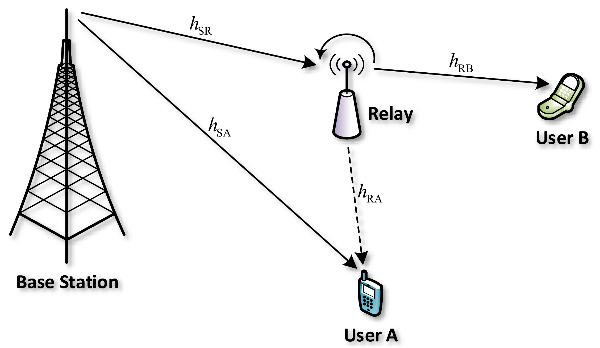

Tasks
Outage
Outage vs distance
Outage calculation
Instructions
To understand the different combining techniques in SIMO, follow these steps:
instructions
Total_transmit_power(Pt)
Threshold_power(P_min))
distance/shell_radius(d)
frequency(fc in Mhz)
Calculate

Observations
Outage vs Distance
Instructions
To understand the outage vs distance follow these steps:
test
Total_transmit_power(Pt)
Threshold_power(P_min))
frequency(fc in Mhz)
Calculate
Observations